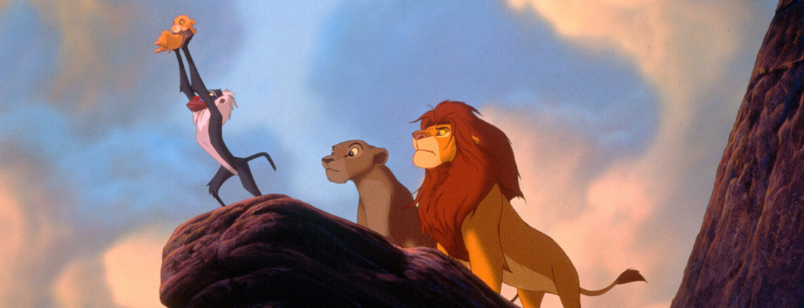
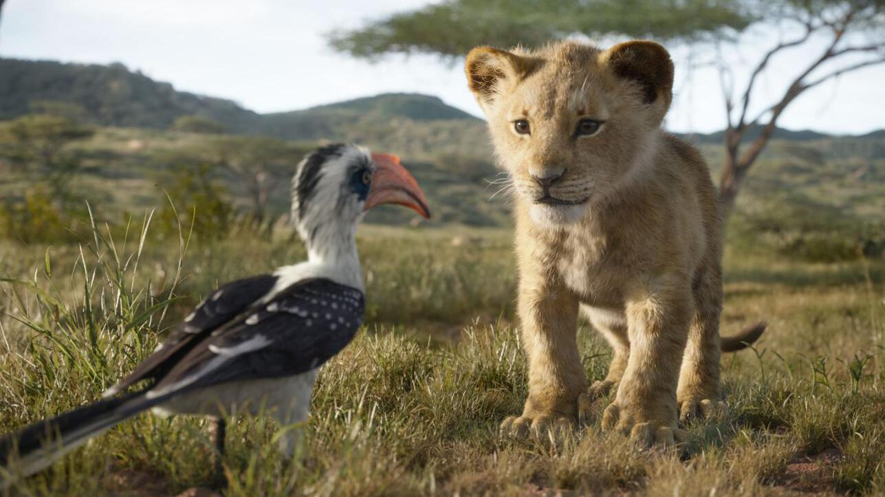
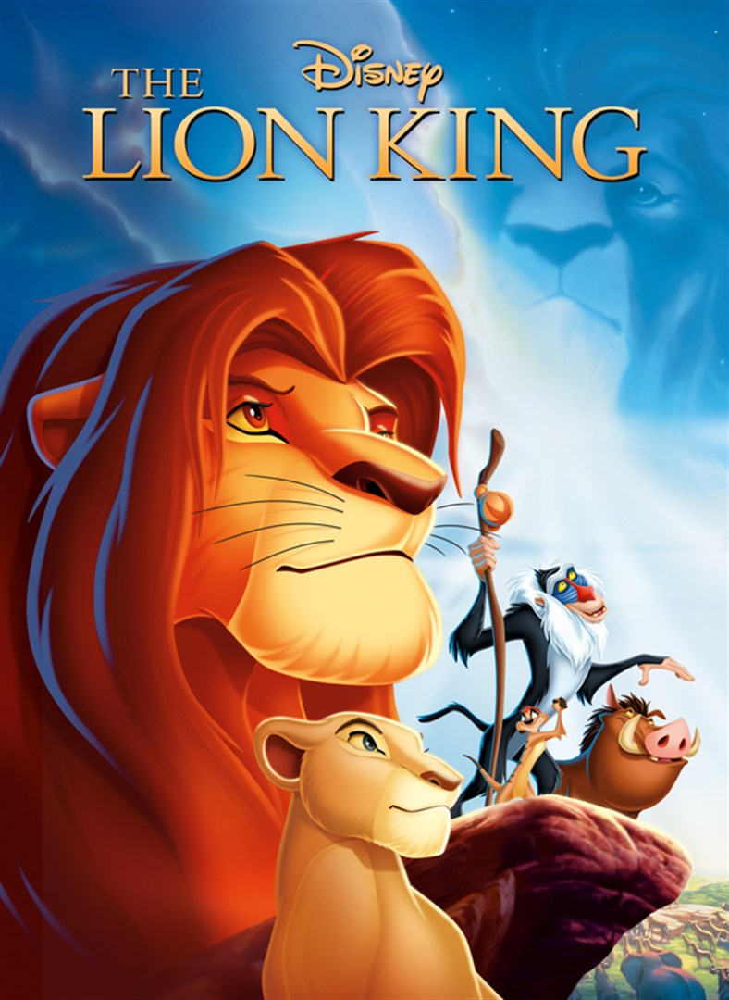

Wat is de lion king?
"The Lion King"
is een animatiefilm van Disney die het verhaal volgt van een jonge leeuw genaamd Simba. Hij is de zoon van Mufasa, de koning van de savanne. Het verhaal begint met Simba's geboorte en zijn opgroeien in de koninklijke familie. Maar wanneer Mufasa wordt vermoord door zijn jaloerse broer Scar, voelt Simba zich verantwoordelijk en vlucht hij het koninkrijk uit. In zijn ballingschap ontmoet Simba nieuwe vrienden, zoals Timon en Pumbaa, en leert hij om zijn verantwoordelijkheden te vermijden. Uiteindelijk moet hij terugkeren naar zijn thuisland om zijn plek als koning op te eisen en de cirkel van het leven te herstellen. De film behandelt thema's als familie, verantwoordelijkheid, en de cyclus van het leven, en is beroemd om zijn muziek en visuele stijl. Het is een klassieker die door veel mensen gewaardeerd wordt! Cast-Personnage
Simba:
De hoofdrolspeler, vaak vertolkt door acteurs zoals Matthew Broderick (in de originele film) en Donald Glover (in de remake).Mufasa:
Simba's vader, met stemmen zoals James Earl Jones (in de originele film en remake).Scar:
De antagonist, vaak gespeeld door Jeremy Irons (originele film) en Chiwetel Ejiofor (remake).Nala:
Simba's beste vriendin en latere partner, met stemmen zoals Moira Kelly (originele film) en Beyoncé (remake).Timon:
Een van Simba's vrienden, vaak gespeeld door Nathan Lane (originele film) en Billy Eichner (remake). De andere vriend van Simba, vaak vertolkt door Ernie Sabella (originele film) en Seth Rogen (remake).Rafiki:
De wijze mandril, vaak gespeeld door Robert Guillaume (originele film) en John Kani (remake).

Quotes
Mufasa:
"Remember who you are."Simba:
"I can't wait to be king!"Scar:
"Long live the king."Rafiki:
"The past can hurt. But the way I see it, you can either run from it or learn from it."Timon:
"Hakuna Matata! It means no worries.""Simba,
you have to come home.".jpeg)
.jpeg)